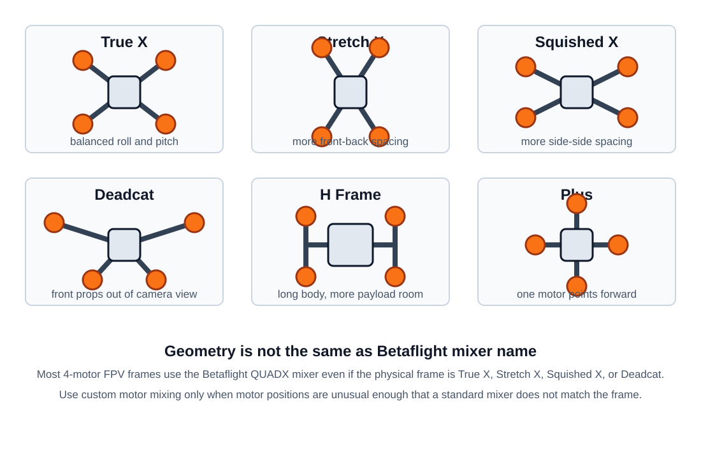

FPV Frame
Frame Job
The frame holds all FPV drone parts in the right position:
- Motors and propellers
- Flight controller and ESC stack
- Battery
- FPV camera and video transmitter
- Receiver, antennas, GPS, buzzer, and action camera
The frame affects flight feel, crash strength, vibration, camera view, prop size, and how easy the build is to repair.
Frame Types

| Frame type | Best for | Pros | Cons |
|---|---|---|---|
True X |
racing, freestyle, general 5 inch builds | Balanced motor spacing, similar roll and pitch feel, easy to tune | Props may appear in HD camera view |
Stretch X |
racing, fast freestyle | More pitch stability and forward-flight feel, good for cornering | Less symmetrical than True X, can feel different on roll vs pitch |
Squished X |
compact freestyle, some cine/freestyle builds | Wider side-to-side motor spacing, compact length | Less pitch authority than Stretch X, props can still be visible |
Deadcat |
cinematic FPV, HD camera builds | Front props are usually out of camera view | Asymmetric layout, yaw and tuning can feel less clean on some builds |
H frame |
long range, payload, roomy builds | More space for battery, camera, VTX, GPS, and wiring | Longer arms or heavier center body, usually less agile |
Plus |
simple experimental quads | Simple motor layout and supported by Betaflight | One motor is directly in front of the camera, uncommon for modern FPV |
Note
A physical Deadcat, Stretch X, or Squished X frame is often still configured as QUADX in Betaflight. The mixer describes motor control geometry, not the marketing name printed on the frame.
Material
Most modern FPV frames use carbon fiber plates because carbon fiber gives high stiffness and strength for low weight.
Common materials:
| Material | Use | Pros | Cons |
|---|---|---|---|
| Carbon fiber | Main plates and arms | Light, stiff, strong, good crash resistance | Conductive, sharp edges, dust is unsafe when cutting |
| Aluminum | Standoffs, camera cages, hardware | Strong threads, easy machining | Heavier than plastic, can bend, transmits vibration |
| Steel | Screws and press nuts | Strong, cheap | Heavy |
| Titanium | Premium screws or hardware | Strong and light | Expensive |
| TPU | Antenna mounts, camera bumpers, GPS mounts, arm guards | Flexible, absorbs impact, easy to print | Too flexible for main arms |
| Plastic / polycarbonate | Ducts, whoop frames, camera protection | Cheap, light, impact tolerant | Less stiff than carbon, can cause vibration on larger builds |
For 5 inch freestyle, a common starting point is carbon arms around 5-6 mm thick, with thinner top plates around 2 mm. Racing frames often save more weight. Long-range frames usually prioritize stiffness and lower vibration over crash strength.
Frame Size
Frame size normally means the largest propeller the frame can safely use.
| Prop size | Common use |
|---|---|
2-2.5 inch |
tiny whoop, micro indoor, lightweight park flying |
3-3.5 inch |
small freestyle, sub-250 g builds |
4 inch |
efficient lightweight freestyle or long range |
5 inch |
standard freestyle and racing |
6 inch |
cruiser, heavier freestyle |
7 inch |
long range |
8-10 inch |
heavy long range, payload, efficient cruising |
Larger frames usually carry larger props and bigger batteries, but they are heavier and need more space to fly safely.
Selection Factors
Check these before buying a frame:
- Prop clearance: the frame must fit your prop diameter without the props touching the frame, camera, battery strap, or wires.
- Stack mounting: common sizes are
30.5x30.5 mm,25.5x25.5 mm, and20x20 mm. - Camera mounting: check analog micro, DJI, Walksnail, HDZero, or action camera support.
- Motor mounting: common small motors use
9x9 mmor12x12 mm; 5 inch motors often use16x16 mm. - Battery space: long top plate or bottom plate space matters for LiPo size and center of gravity.
- Arm design: replaceable arms are easier to repair than unibody plates.
- Arm thickness and width: thicker and wider arms are stronger and stiffer but heavier.
- Carbon quality: poor carbon can delaminate or vibrate more.
- Vibration path: soft camera mounts and clean arm design help the gyro and video.
- Electronics protection: side plates, camera cages, and TPU bumpers help protect expensive parts.
- Weight: lighter frames feel sharper and fly longer, heavier frames usually survive crashes better.
- Access: check if you can remove arms without taking apart the whole stack.
- Hardware: use good screws, threadlocker on metal-to-metal screws, and avoid over-tightening carbon.
Unibody vs Replaceable Arms
| Design | Pros | Cons |
|---|---|---|
| Unibody | Light, simple, fewer screws | One broken arm can require replacing the whole bottom plate |
| Replaceable arms | Easier and cheaper crash repair, common on freestyle frames | More screws, more weight, possible arm slop if hardware loosens |
| Sandwich arms | Strong arm clamping between plates | More parts and stack height |
For learning freestyle, replaceable arms are usually the practical choice.
Betaflight Support
Betaflight supports built-in mixers and custom motor mixing. Use the Betaflight Configurator or CLI:
Common Betaflight airframe mixers:
| Mixer | Meaning | Typical FPV use |
|---|---|---|
QUADX |
Quadcopter X | Most FPV quads: True X, Stretch X, Squished X, Deadcat |
QUADP |
Quadcopter Plus | Plus-shaped quad |
TRI |
Tricopter | 3 motors with a yaw servo |
Y4 |
Y4-copter | 4 motors in Y layout |
Y6 |
Y6-copter | 6 motors, coaxial Y layout |
HEX6, HEX6X, HEX6H |
Hexacopter layouts | 6-motor builds |
OCTOX8, OCTOFLATP, OCTOFLATX |
Octocopter layouts | 8-motor builds |
VTAIL4, ATAIL4 |
Tail quad layouts | uncommon experimental frames |
CUSTOM |
User-defined motor mix | unusual motor positions |
CUSTOM AIRPLANE |
User-defined fixed wing | fixed wing, not normal FPV quad |
CUSTOM TRICOPTER |
User-defined tricopter | unusual tricopter layouts |
Summary:
- Most modern FPV quad frames use
QUADX. - Frame marketing names like
DeadcatorStretch Xusually do not require a special Betaflight mixer. - Use
CUSTOMonly if the motors are not close enough to a normal X mixer or if the frame has a special geometry. - After changing frame type or mixer, always verify motor order and motor direction before flying.